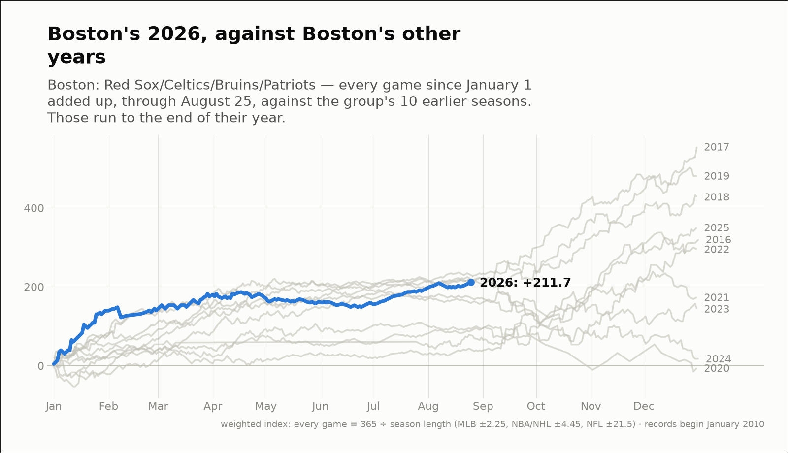
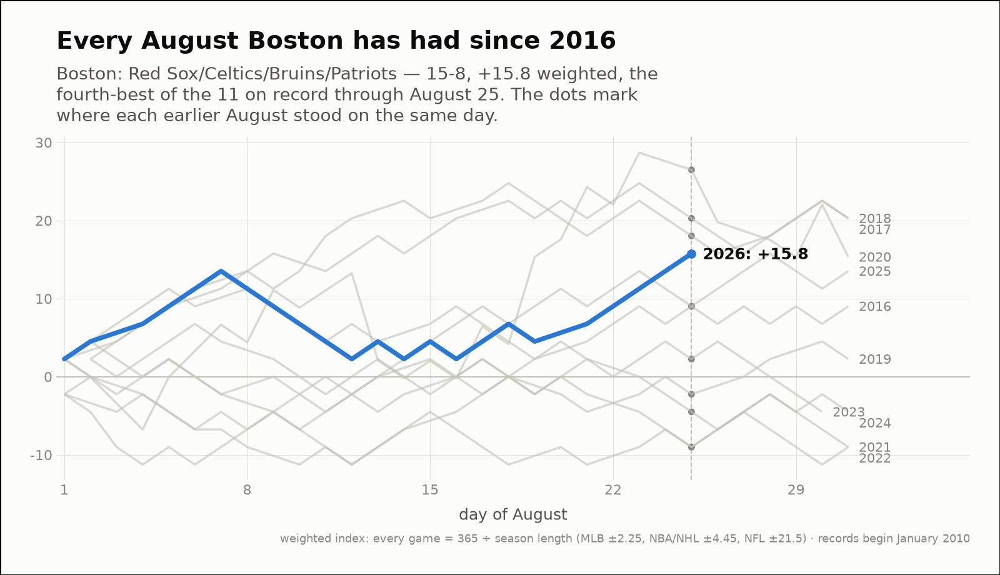
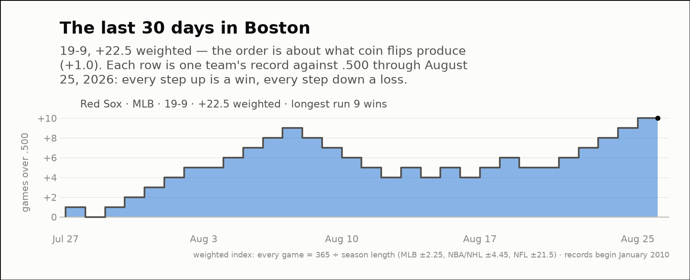

City of the day — Boston
Boston: Red Sox/Celtics/Bruins/Patriots
- 2026 so far
- 142-99, +211.7 weighted over 241 games; longest run 14 straight wins
- Order of results
- about as clumped as coin flips (+0.6)
- Earlier seasons (full-year weighted)
- 2016 +319.9, 2017 +554.9, 2018 +428.0, 2019 +481.2, 2020 -6.1, 2021 +173.3, 2022 +295.2, 2023 +144.1, 2024 +17.5, 2025 +350.1
- Last 30 days
- 19-9, +22.5 weighted; longest run 9 straight wins
- Window opens
- July 27, 2026
- August 2026 through day 25
- 15-8, +15.8 weighted — the fourth-best of the 11 on record
- Same August in earlier years (same stretch)
- 2016 +9.0, 2017 +20.3, 2018 +18.0, 2019 -2.2, 2020 +26.5, 2021 -9.0, 2022 -9.0, 2023 +2.2, 2024 -4.5, 2025 +9.0
| Team | Last 30 days | Weighted | Longest run |
|---|---|---|---|
| Red Sox | 19-9 | +22.5 | 9 straight wins |


